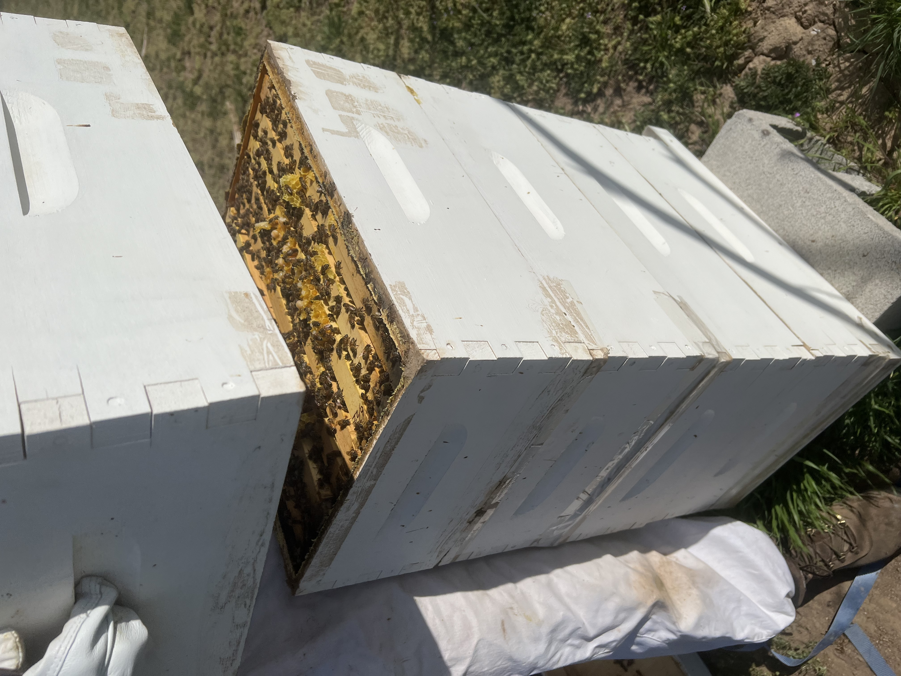
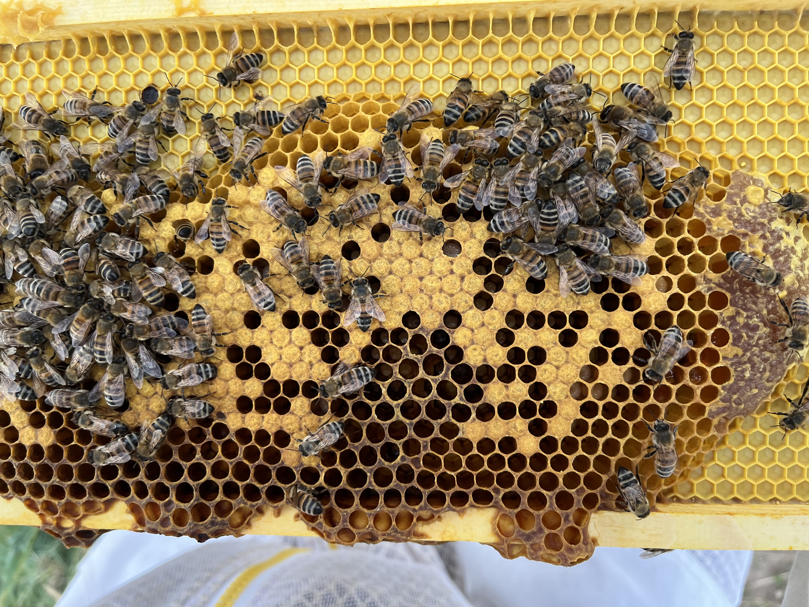
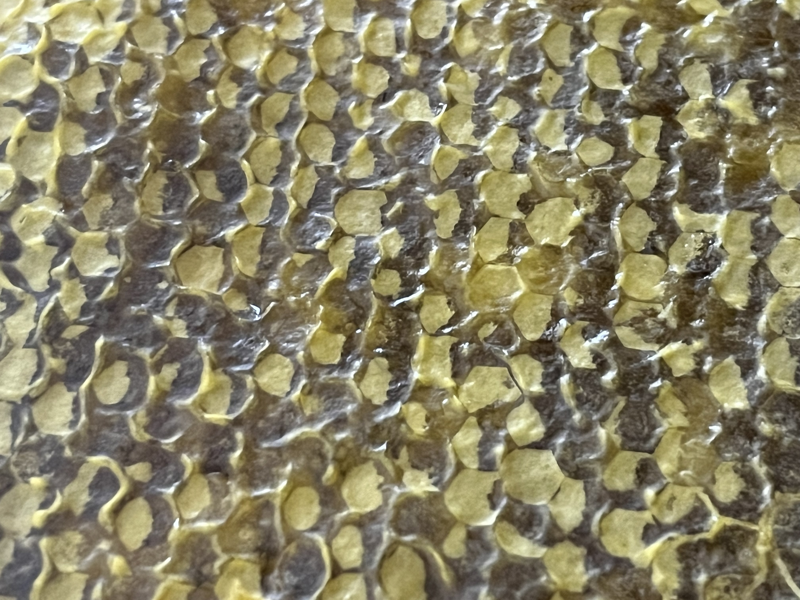

Our honey is a reflection of our deep respect for the super-organism of the hive. We practice natural beekeeping, a "bee-first" approach where we act as stewards rather than managers. This means we use no synthetic chemicals combined with gentle, minimal-intervention techniques, we reduce stress on the colony and allow our bees to structure the colony how they see fit.


To ensure their long-term health, we regularly test for Varroa mites, monitoring population levels closely so we can support the bees' natural resilience and intervene only when necessary for the colony's survival.
Most importantly, we harvest only the surplus, always leaving the bees enough of their own nutrient-rich honey to thrive through the winter months. By supporting their natural instincts, we provide you with the purest, most ethical honey while restoring the local ecosystem one blossom at a time.
